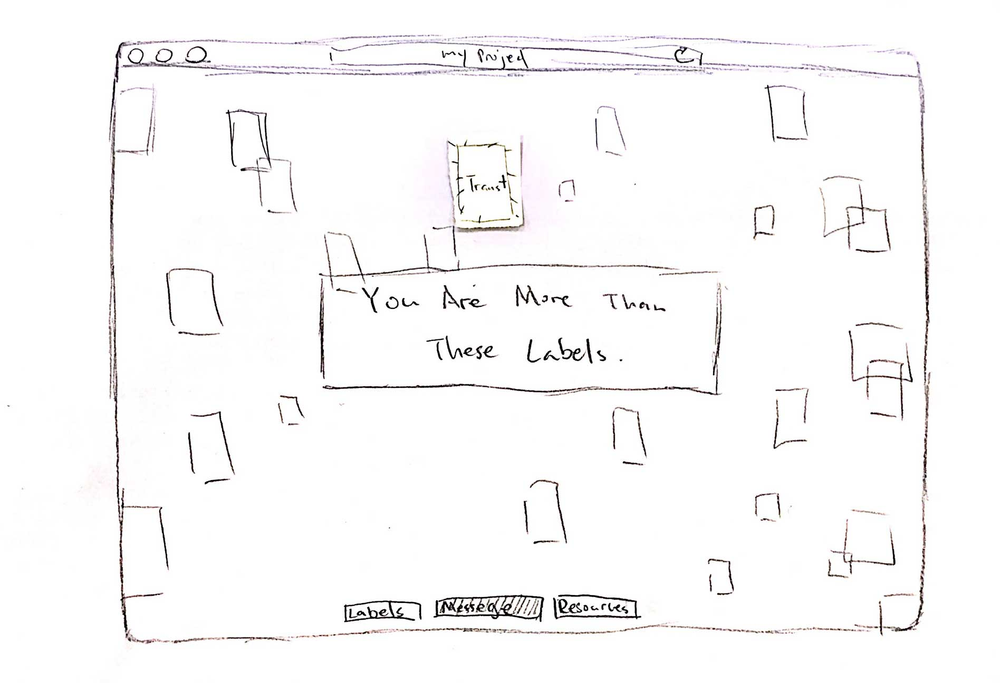

My page is relatively simple, but since I'm using the 3D library, it's difficult to show the affordances of page on paper. During the first user testing, the user wasn't sure if each of the labels on the globe was clickable. Also, when opening an external page, the user had to use the back button to go back to my page, which is not ideal if they want to open multiple external pages.
I used post-it notes to indicate the hover effect of each of the label for both the labels and the resources. I also added the zoomed in view for the globe, which is done by scrolling. The labels are still clickable in the message page. Finally, instead of going directly to the external linked page, I will open the external links in a new tab, so users can easily go back to my page and open multiple external resources.
